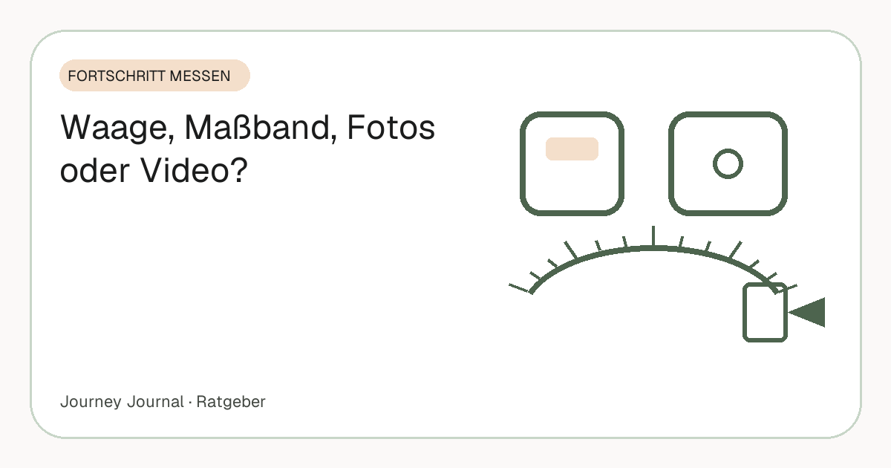

Ratgeber · Fortschritt messen · 5 Min. Lesezeit
Fortschritt beim Abnehmen messen: Waage, Maßband, Fotos oder Video?
„Nimmst du ab?“ ist eine einfache Frage mit vier verschiedenen Antworten – je nachdem, ob du die Waage, das Maßband, ein Foto oder ein Video fragst. Jede Methode misst etwas anderes, jede hat einen blinden Fleck. Wer das versteht, hört auf, sich von einem einzigen Wert verrückt machen zu lassen – und baut sich eine Kombination, die auch in Woche neun noch etwas zeigt.

Teil unseres Guides: Progress-Fotos: Der komplette Guide – Aufnahme, Rhythmus, Vergleich, Speicherung
Kurz gesagt
- Waage: misst Masse, nicht Fett – täglich wiegen, nur den Wochentrend lesen.
- Maßband: misst Form – alle 2–4 Wochen an fünf festen Stellen, zeigt Fortschritt, wenn die Waage schweigt.
- Fotos: zeigen die Summe aus allem – wöchentliches Drei-Winkel-Set, vergleichen erst nach vier Wochen.
- Video: misst, wie es dir geht – 30 Sekunden täglich, der Faktor, der über das Durchhalten entscheidet.
- Die Kombination: täglich Selfie + Statement + Waage, wöchentlich Foto-Set, monatlich Maßband – alles an einem Ort.
Die Waage: schnell, objektiv, launisch
Die Waage misst Masse – nicht Fett. Wasser, Salz, Glykogen, Verdauung und Zyklus lassen den Wert täglich um ein bis zwei Kilo schwanken, während Fettabbau in Wochen passiert. Ihre Stärke ist der Trend über sieben Tage; ihre Schwäche ist der einzelne Morgen. Wer nur die Waage nutzt, feiert und verzweifelt im Wochenrhythmus – ohne dass sich am Körper etwas geändert hätte.
Die Forschung ist dabei eindeutig auf der Seite der Waage, solange sie richtig gelesen wird: Die Übersichtsarbeit von Zheng und Kollegen (2015) fand regelmäßiges Wiegen mit besseren Ergebnissen verbunden und ohne negative psychische Folgen in den ausgewerteten Studien. Wie oft wiegen sinnvoll ist und warum der Wert so springt, haben eigene Artikel.
Das Maßband: sieht, was die Waage übersieht
Bauchumfang auf Nabelhöhe, Hüfte, Oberschenkel, Oberarm, Brust – gemessen alle zwei bis vier Wochen. Wer gleichzeitig Muskeln aufbaut, sieht auf der Waage oft Stillstand, am Maßband aber Zentimeter weniger. Und der Bauchumfang ist mehr als ein Fortschrittsmaß: Die WHO nutzt ihn in ihrem Expertenbericht als eigenständigen Gesundheitsindikator, mit einem festen Messprotokoll.
Fehlerquelle ist der Zug am Band – zu straff, zu locker, ein Zentimeter höher. Immer gleich straff, immer an derselben Stelle, immer morgens, zweimal messen; wie man das Maßband exakt anlegt, steht in einer eigenen Anleitung nach WHO-Protokoll.
Fotos: das ehrlichste Bild – wenn sie vergleichbar sind
Fotos zeigen die Summe aus allem: Fett, Muskel, Haltung, Ausstrahlung. Sie sind das, was andere sehen. Ihre Schwäche ist die Vergleichbarkeit: anderes Licht, anderer Abstand, andere Kleidung, und der Vergleich ist wertlos. Wer die Bedingungen festhält – gleiche Zeit, gleicher Ort, gleiche drei Winkel, Silhouette als Hilfe – hat nach drei Monaten das überzeugendste Beweisstück, das es gibt.
Ihre zweite Schwäche ist die Geduld, die sie verlangen. Bei 0,5 bis 1 Kilo pro Woche, dem Tempo, das etwa der NHS empfiehlt, braucht ein sichtbarer Unterschied drei bis vier Wochen; für andere Menschen liegt die Schwelle laut Re und Rule (2016) bei etwa 1,3 BMI-Punkten, grob vier Kilo. Wer früher vergleicht, sieht Rauschen. Die sieben Regeln für vergleichbare Bilder sind die Voraussetzung, der komplette Guide die Vertiefung.
Video: misst, was kein anderes Werkzeug misst
Ein 30-Sekunden-Statement – „Wie fühle ich mich heute?“ – misst Energie, Stimmung, Schlaf, Selbstbild. Nichts davon steht auf der Waage, aber genau das entscheidet, ob du nach sechs Monaten noch dabei bist. Und es funktioniert an Tagen, an denen du kein Foto von dir willst. Nach einem Jahr ist dieses Archiv das Bewegendste an der ganzen Reise.
Der blinde Fleck des Videos ist die Messbarkeit: Es liefert keine Zahl und keinen Vergleich auf einen Blick. Das ist kein Mangel, sondern seine Aufgabe – es ist das Werkzeug für die Wochen, in denen die anderen drei nichts hergeben. Wie ein Video-Tagebuch funktioniert und wo die Clips sicher liegen, steht im eigenen Artikel.
Der Vergleich auf einen Blick
| Methode | Misst | Blinder Fleck | Rhythmus | Lesen als |
|---|---|---|---|---|
| Waage | Gesamtmasse | Wasser, Muskel, Darminhalt | täglich, morgens nüchtern | Sieben-Tage-Durchschnitt |
| Maßband | Körperform, Bauchumfang | Zug am Band, Messstelle | alle 2–4 Wochen | Trend pro Stelle |
| Fotos | Summe aus Fett, Muskel, Haltung | Licht, Abstand, Kleidung | täglich Selfie, wöchentlich 3-Winkel-Set | Vergleich ab Woche 4 |
| Video | Energie, Stimmung, Selbstbild | keine Zahl | täglich 10–30 Sekunden | nie bewerten, nur festhalten |
Welche Methode wann die Wahrheit sagt
In Woche eins sagt die Waage am meisten – und das meiste davon ist Wasser. In Woche zwei bis drei sagt sie fast nichts, das Maßband wenig, Fotos noch nichts; hier trägt das Video. Ab Woche vier beginnen die Fotos zu sprechen, ab Woche sechs bis acht das Maßband deutlich, und im Plateau ab Woche acht oder neun – das Hall und Kahan (2018) als normale Anpassung von Verbrauch und Appetit beschreiben – sind Maßband und Fotos oft die einzigen Werkzeuge, die noch Fortschritt zeigen. Wer alle vier hat, hat in jeder Phase mindestens eines, das etwas sagt.
Die Kombination, die durchhält
Nicht alles jeden Tag. Täglich reichen ein Selfie, ein kurzes Statement und der Blick auf die Waage – zusammen unter zwei Minuten. Wöchentlich das Drei-Winkel-Set und ein Blick auf den Wochentrend. Monatlich das Maßband. Und den ersten echten Vorher-Nachher-Vergleich trägst du in den Kalender ein: frühestens in vier Wochen. Bis dahin wird dokumentiert, nicht beurteilt.
Dass sich dieser Aufwand lohnt, ist gut belegt: Burke und Kollegen (2011) fanden in ihrer systematischen Übersicht über alle Formen der Selbstbeobachtung hinweg denselben Zusammenhang – wer regelmäßig dokumentiert, nimmt mehr ab. Die Kombination aus vier Methoden ist nichts anderes als Selbstbeobachtung, die in jeder Phase funktioniert.
Wo das alles landen sollte
Verstreute Fotos in der Galerie, Zahlen in Notizen, Videos irgendwo – so geht Motivation verloren. Ein Ort, eine Struktur, nach Typ und Monat sortiert, gesichert in deinem eigenen Speicher. Dann ist der Blick zurück nach einem Jahr ein Knopfdruck und kein Suchspiel. Die Checkliste für Tag 1 legt diese Struktur in 30 Minuten an.
Häufige Fragen
Was ist besser zum Abnehmen: Waage oder Maßband?
Beides misst Unterschiedliches. Die Waage zeigt den Wochentrend der Gesamtmasse, das Maßband zeigt Körperform – gerade bei gleichzeitigem Muskelaufbau ist das Maßband aussagekräftiger.
Wie oft sollte ich Fortschrittsfotos machen?
Ein tägliches Selfie für die Gewohnheit, ein sauberes Drei-Winkel-Set pro Woche für den Vergleich. Vergleichen erst nach drei bis vier Wochen.
Bringt ein Video-Tagebuch beim Abnehmen etwas?
Ja – es hält fest, was Waage und Fotos nicht messen: wie du dich fühlst. Das ist über Monate der wichtigste Faktor fürs Durchhalten.
Welche Methode zeigt im Plateau noch Fortschritt?
Meist Maßband und Fotos. Die Waage steht im Plateau definitionsgemäß still, Form und Haltung verändern sich aber oft weiter.
Muss ich wirklich alle vier Methoden nutzen?
Nein, aber jede fehlende Methode ist eine Phase, in der du nichts siehst. Mindestens Waage als Wochentrend plus wöchentliche Fotos; Video und Maßband machen die schweren Wochen leichter.
Quellen
- Zheng Y. et al. (2015): Self-weighing in weight management: A systematic literature review. Obesity 23(2) – Regelmäßiges Wiegen, Wochentrend, keine psychischen Nachteile
- WHO (2011): Waist circumference and waist–hip ratio. Report of a WHO Expert Consultation 2008 – Messprotokoll für Bauch- und Hüftumfang
- Burke L. E., Wang J., Sevick M. A. (2011): Self-monitoring in weight loss: a systematic review. J Am Diet Assoc 111(1) – Selbstbeobachtung ist mit größerem Gewichtsverlust verbunden
- NHS: Losing weight – Getting started (12-week plan) – Empfohlenes Tempo 0,5–1 kg pro Woche
- Re D. E., Rule N. O. (2016): Heavy Matters. Social Psychological and Personality Science 7(1) – Wahrnehmungsschwelle sichtbarer Veränderung im Gesicht: etwa 1,3 BMI-Punkte
- Hall K. D., Kahan S. (2018): Maintenance of Lost Weight and Long-Term Management of Obesity. Med Clin North Am 102(1) – Anpassung von Verbrauch und Appetit beim Abnehmen
Dieser Artikel ersetzt keine ärztliche Beratung. Bei einer größeren Gewichtsreduktion ist eine medizinische Begleitung sinnvoll.